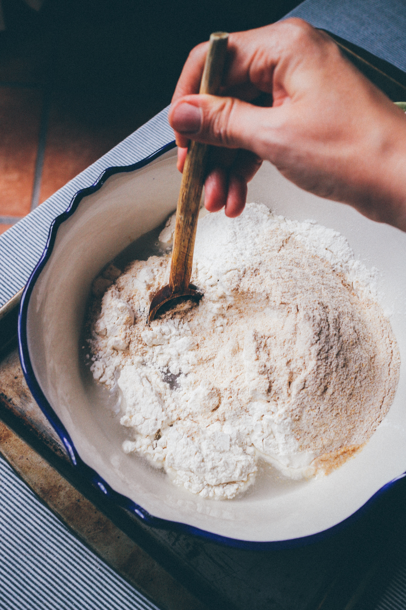
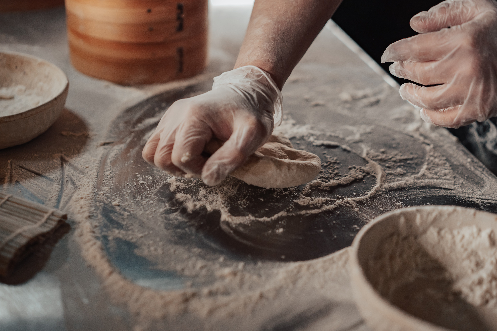

What's the science behind the starter?
From the homepage, we now know that a sourdough starter is made up of a mixture of flour, water, and (most importantly) the culture of yeast microorganisms. But how does this turn a bowl of wet flour into a delicious loaf of bread?
Monserrat Soldú. Close-Up Shot of a Person Mixing Flour in a Bowl. 2020. Pexels.com (https://www.pexels.com/photo/close-up-shot-of-a-person-mixing-flour-in-a-bowl-6678666/)
Well, first let's start with how the microorganisms make their way into the starter. Both the flour and our air naturally contain these yeast and bacteria, but they can't break down our flour without a little help. When water is added into the flour, it kickstarts an enzyme called amylase. Amylase breaks down the starch of the flour into two sugars: glucose and maltose. These are sugars that our natural yeast can metabolize and digest! With time, the yeast from the air and flour and feed on the sugars from the starter and multiply, developing a stable culture. The yeast produces carbon dioxide as a byproduct to all this digesting, which is the gas that makes our bread rise in the oven.
Mikhail Nilov. Person Kneading Dough on Stainless Steel Table. 2021. Pexels.com (https://www.pexels.com/photo/person-kneading-dough-on-stainless-steel-table-8093332/)
But what about the unique "sour" flavor that sourdough has? Well, that comes from a process known as
fermentation. Along with the yeast in the starter, there's also a specific type of bacteria known as
lactic acid. Lactic acid converts the sugars in the flour mixture into alcohol, which gives the bread
its unique "sour" taste once it's baked.
All the science behind sourdough getting you excited? Scroll down and check out a starter recipe
that you can make in your own kitchen!